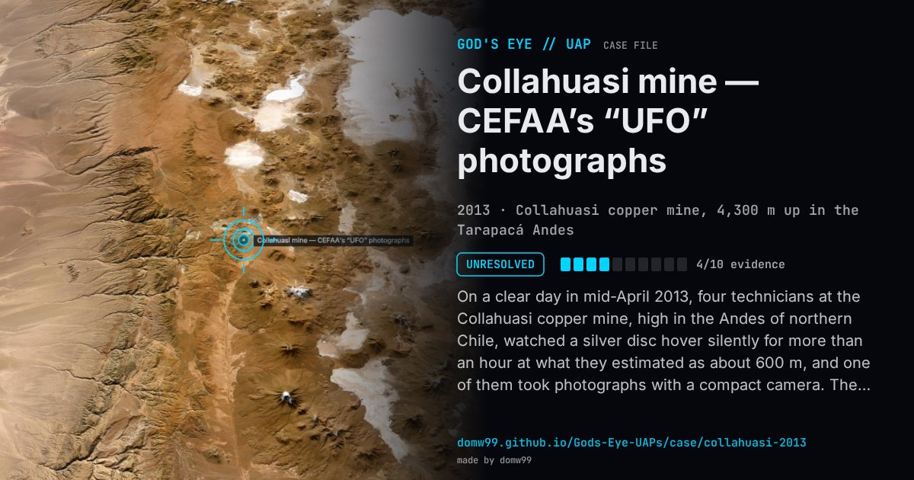

Collahuasi mine — CEFAA’s “UFO” photographs

On a clear day in mid-April 2013, four technicians at the Collahuasi copper mine, high in the Andes of northern Chile, watched a silver disc hover silently for more than an hour at what they estimated as about 600 m, and one of them took photographs with a compact camera. They kept quiet until the mine’s chief engineer sent two pictures to CEFAA in February 2014. A CEFAA analyst at the meteorological office ruled out lenticular cloud, aircraft, drones, balloons and birds, found the object brighter than reflected sunlight would make it, and concluded it “can be qualified as a UFO”; the director, retired General Ricardo Bermúdez, released the study in July 2014 but said it was one analyst’s view and that the committee had to be cautious. The witnesses never answered CEFAA’s requests to talk, the originals and the order of the pictures were uncertain, and critics noted that a disc against blue sky gives no way to judge its size or distance. CEFAA filed the case as unexplained.
What was seen
Shape: A silver disc, estimated 5 to 10 m across
Witnesses: Four technicians at the mine (anonymous); the photographs reached CEFAA through the chief engineer
Duration: More than an hour
Sources
- Leslie Kean — Chile releases official study on UFO photos (HuffPost, 2014)
- Noticias Caracol — Chilean aeronautics confirms a UFO sighting (2014)
- Kloptdatwel — critique of the CEFAA analysis (2014)
Browse
- Chile
- 2010s
- Unresolved
- Photo and video cases
- Official government documents
- Many independent witnesses
- Photographs
- Discs and saucers